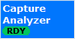

The "Capture Analyzer" tab displays all results. The settings are accessible via softkeys and hotkeys. The application has no remote commands and no main configuration dialog box.
The capture buffer analyzer is only supported on R&S CMW100/CMW with MUA. Because it is a debugging tool, it is only visible in user mode "User (Extended)". |
To turn the measurement on or off, select the control softkey and press ON | OFF or RESTART | STOP. Alternatively, right-click the control softkey.
See also: "Measurement Control"

See "Scope of the capture buffer, segments and steps".
Opens a dialog box for selection of the name and path of a file with the extension .iqw.
When you close the dialog box, the buffer data is stored into the defined file. An info file is also created.
You can use the files to transfer your buffer data to Rohde & Schwarz upon request.